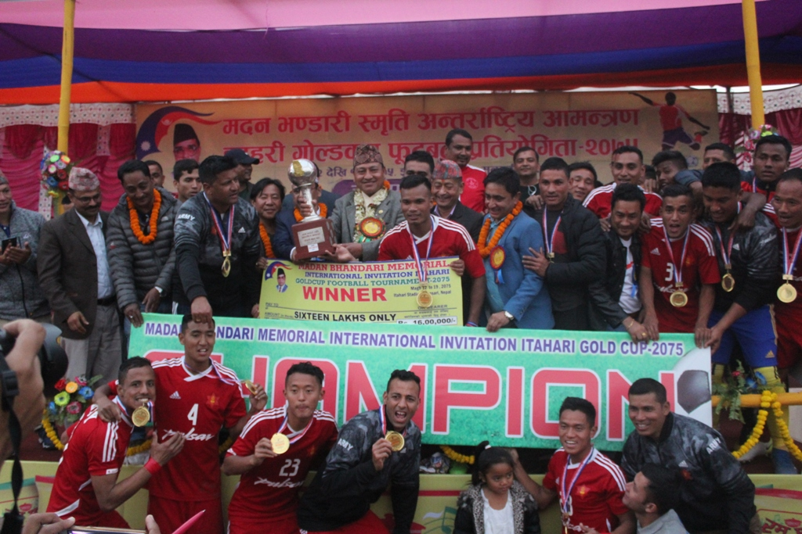

Tribhuvan Army Club defeated Signature Manang Marshyangdi Club 2-0 to win the title of the third Madan Bhandari Memorial International Invitational Itahari Gold Cup Football Tournament here at the Itahari Stadium today. Tanka Basnet and skipper Bharat Khawas scored a goal each for the departmental side to win the second title of the season. TAC had won Bishal Memorial Gold Cup in Birgunj, while they lost to Ruslan Three Star Club in the Ruslan Simara Gold Cup final. The Pulsar Martyrs Memorial A Division League champions MMC are yet to open their accounts in mofussil despite coming close on two occasions. They had faced a 2-0 defeat at the hands of Nepal Police Club in the final of the Nepal Ice third Farwest Khaptad Gold Cup in Dhangadhi. On Saturday, Basnet gave an early lead to TAC when he guided the ball alone from the centre of the pitch and beat past as many as two defenders before slotting home in the fifth minute of the match. MMC were reduced to 10 men in the 70th minute after Olawale Afeez got the marching orders from FIFA Referee Sudish Pandey for a foul on TAC goalkeeper Bikesh Kuthu. TAC made the numerical advantage count and scored one more goal although they were made to wait until 88th minute. Skipper Khawas found the back of the nets on a long pass from Padam Tamang to seal the victory. With the victory, TAC received Rs 1.6 million along with the trophy, while MMC earned Rs 800,000. TAC’s Bimal Pandey was named the man of the match and he earned Rs 10,000. Actor Bhuwan KC, who was in the tournament to promote his movie ‘Captain’, handed over another Rs 10,000 to Pandey. TAC also dominated the individual awards. Tanka Basnet was declared the best player of the tournament and he got Rs 25,000 along with 42’ LED television, while goalkeeper Bikesh Kuthu, midfielder Santosh Tamang and coach Chun Bahadur Thapa also got individual awards and they earned Rs 20,000 each. TAC skipper Bharat Khawas the highest scorer of the tournament and he was also named the best forward. Khawas received Rs 45,000. MMC’s Suraj BK was the best defender and he earned Rs 20,000, whereas Umesh Rai of hosts Rashtriya Jagriti Club was declared the emerging player.
Tribhuvan Army Club team members celebrate with the trophy after winning the third Madan Bhandari Memorial International Invitational Itahari Gold Cup at the Itahari Stadium in Sunsari on Saturday. TAC defeated Signature Manang Marshyangdi Club 2-0 in the final match. Photo.
Tribhuvan Army Club defeated Signature Manang Marshyangdi Club 2-0 to win the title of the third Madan Bhandari Memorial International Invitational Itahari Gold Cup Football Tournament here at the Itahari Stadium today. Tanka Basnet and skipper Bharat Khawas scored a goal each for the departmental side to win the second title of the season. TAC had won Bishal Memorial Gold Cup in Birgunj, while they lost to Ruslan Three Star Club in the Ruslan Simara Gold Cup final. The Pulsar Martyrs Memorial A Division League champions MMC are yet to open their accounts in mofussil despite coming close on two occasions. They had faced a 2-0 defeat at the hands of Nepal Police Club in the final of the Nepal Ice third Farwest Khaptad Gold Cup in Dhangadhi. On Saturday, Basnet gave an early lead to TAC when he guided the ball alone from the centre of the pitch and beat past as many as two defenders before slotting home in the fifth minute of the match. MMC were reduced to 10 men in the 70th minute after Olawale Afeez got the marching orders from FIFA Referee Sudish Pandey for a foul on TAC goalkeeper Bikesh Kuthu. TAC made the numerical advantage count and scored one more goal although they were made to wait until 88th minute. Skipper Khawas found the back of the nets on a long pass from Padam Tamang to seal the victory. With the victory, TAC received Rs 1.6 million along with the trophy, while MMC earned Rs 800,000. TAC’s Bimal Pandey was named the man of the match and he earned Rs 10,000. Actor Bhuwan KC, who was in the tournament to promote his movie ‘Captain’, handed over another Rs 10,000 to Pandey. TAC also dominated the individual awards. Tanka Basnet was declared the best player of the tournament and he got Rs 25,000 along with 42’ LED television, while goalkeeper Bikesh Kuthu, midfielder Santosh Tamang and coach Chun Bahadur Thapa also got individual awards and they earned Rs 20,000 each. TAC skipper Bharat Khawas the highest scorer of the tournament and he was also named the best forward. Khawas received Rs 45,000. MMC’s Suraj BK was the best defender and he earned Rs 20,000, whereas Umesh Rai of hosts Rashtriya Jagriti Club was declared the emerging player.